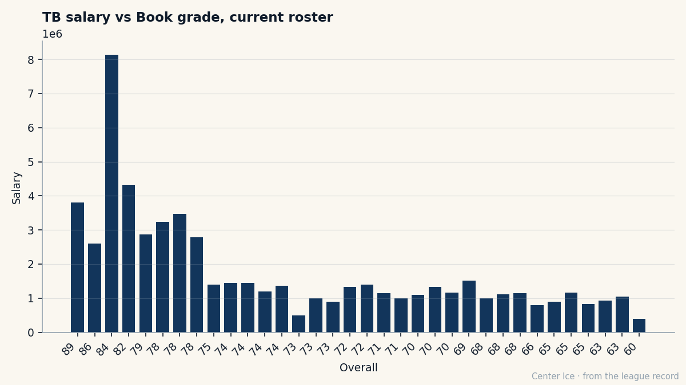

TB
TBSpeed 93, Injury 50: Vincent Lecavalier Carries Two Bodies and One Contract
He has 12 points in 8 games at 26.8 minutes a night. The Index says zero. The coach says more. The Book says he's done growing.
 Carol BinghamFeatures writer · Rinkside
Carol BinghamFeatures writer · Rinkside Vincent Lecavalier89 skates 26.8 minutes a night. Last season, in 59 games, he averaged 21.9. During his 138-point year he averaged 21.3. He is 25. He is the Lightning's alternate captain, number 4, from Ile-Bizard, Quebec. He carries a grade of 93 in Acceleration, 93 in Speed, 92 in Agility, 92 in Shot Power, and 50 in Injury Resistance. The first four describe what his body can do. The last describes what happens to it.
Vincent Lecavalier89 skates 26.8 minutes a night. Last season, in 59 games, he averaged 21.9. During his 138-point year he averaged 21.3. He is 25. He is the Lightning's alternate captain, number 4, from Ile-Bizard, Quebec. He carries a grade of 93 in Acceleration, 93 in Speed, 92 in Agility, 92 in Shot Power, and 50 in Injury Resistance. The first four describe what his body can do. The last describes what happens to it.
Michael Burt told The Tunnel five days ago that he thought Lecavalier would move north of 86 on the Bureau's Book this season. "The question isn't whether he's the guy," Burt said. "The question is what he is next year when the Bureau puts him somewhere north of 86." Since that interview, Lecavalier has added 5 points in 3 games. The Development Index has him at form zero. The Book's base grade is 90. His overall reads 86. His potential reads 86. The Bureau says the same number he has is the highest number he gets.
The minutes tell a different story. At 26.8 a night, Burt is using him the way you use a man you need in every situation. Lecavalier sits 10th in the league in scoring pace at 123 points per 82 games. His per-game rate of 1.50 is the lowest it has been since he broke into this league as an 18-year-old, the first overall pick of 1998, the one Art Williams called the Michael Jordan of hockey. But the ice time is compensation for that. The pace is lower because the shift chart is longer, and the shift chart is longer because the coach trusts him in every zone.
The card that says two things
His grades split in half. Up top: 93, 93, 92, 92. The speed grades describe a man who gets open enough to beat a defenceman to the far post, who shoots from distance because his hands arrive before the puck does. Down below: Injury Resistance 50. Fighting 51. Spin Balance 52. Injury Resistance 50 means he breaks, and Fighting 51 means he won't fight when he does. Spin Balance 52 just means he falls over.
Those three numbers are why a leg injury in February 2005 cost him until April, and why the broken foot in January 2001, a slap shot off a block attempt that cost 14 games, felt like a pattern rather than a night. A 6-foot-6, 205-pound centre with Speed 93 should be durable. The Bureau's card says he isn't, and the Bureau has been right.
The gap between what his legs can do and what his legs will tolerate is the whole contract argument. A club paying for his Speed and Shot Power is buying the top of his card. A club paying for what happens in February is buying the bottom. Which half do you pay for?
What 86 costs someone else
The contract-year class has three men at 86 in the Book. Vincent Lecavalier at Tampa Bay makes $2.60M.  Geoff Sanderson86 at Columbus makes $6.34M.
Geoff Sanderson86 at Columbus makes $6.34M.  Teemu Selanne80 at Colorado makes $6.94M. Sanderson has 6 points in 8 games. Selanne has 6 in 8. Lecavalier has 12 in 8. The Lightning pay less than half of what Columbus and Colorado pay men with the same grade and the same output.
Teemu Selanne80 at Colorado makes $6.94M. Sanderson has 6 points in 8 games. Selanne has 6 in 8. Lecavalier has 12 in 8. The Lightning pay less than half of what Columbus and Colorado pay men with the same grade and the same output.
If he moves north of 86, that gap widens. If he stays at 86, Tampa Bay renews against 86, not against the Speed grade or the pace or the minutes. The Bureau's potential says 86. The coach says the Bureau is wrong.

The room he plays in
Tampa Bay pays $59.79M for 11 points this season, $5.44M a point. The payroll ranks 11th of 30 clubs. Lecavalier is the second-highest-graded player on the roster, behind  Nikolai Khabibulin92 at 89. The two men ahead of him in grade,
Nikolai Khabibulin92 at 89. The two men ahead of him in grade,  Martin St. Louis87 at 84 and
Martin St. Louis87 at 84 and  Cory Stillman85 at 82, are behind him in the grade column and ahead of him on the ice-time chart only when the coach needs defensive cover. Lecavalier's morale is 100. Burt said on The Tunnel that he thinks about the extension before coffee. "You've got a 25-year-old center at $2.60M, an 86 in the Book, and a year on the clock," he said. "The moment that number moves up six, the moment the League Scouting Bureau edition changes and he's in the high 80s, the money changes a lot."
Cory Stillman85 at 82, are behind him in the grade column and ahead of him on the ice-time chart only when the coach needs defensive cover. Lecavalier's morale is 100. Burt said on The Tunnel that he thinks about the extension before coffee. "You've got a 25-year-old center at $2.60M, an 86 in the Book, and a year on the clock," he said. "The moment that number moves up six, the moment the League Scouting Bureau edition changes and he's in the high 80s, the money changes a lot."
The Index hasn't moved. Form zero. If it does move, the coach is right, and the Lightning face the same math that every club with a young star on an expiring deal faces: the number you signed is not the number you renew against.
The arc so far
He has been in this league for eight full seasons. He scored 51 points at 20 and spent a year being told he was a project. He scored 105 at 24 and spent the off-season named MVP of Canada's World Cup team. He has a broken foot and a broken leg and a grade of 50 that says there will be another. At 25, with 12 points in 8 and 26.8 minutes a night and zero on the Index, the question the coach asked before coffee hasn't answered itself yet. It answers in July.
He is still the fastest thing on that roster. His body decides whether that's enough.